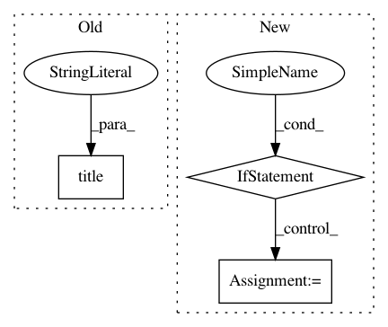

4a8d1ffcf12287d632fb25ef484344d68d987818,skopt/plots.py,,plot_convergence,#,11
Before Change
color="r", lw=1,
label="True minimum")
plt.title("Convergence plot")
plt.xlabel("Number of calls $n$")
plt.ylabel(r"$\min f(x)$ after $n$ calls")
plt.grid()
After Change
true_minimum = kwargs.get("true_minimum", None)
yscale = kwargs.get("yscale", None)
if ax is None:
ax = plt.gca()
ax.set_title("Convergence plot")
ax.set_xlabel("Number of calls $n$")
ax.set_ylabel(r"$\min f(x)$ after $n$ calls")
ax.grid()
In pattern: SUPERPATTERN
Frequency: 4
Non-data size: 3
Instances
Project Name: scikit-optimize/scikit-optimize
Commit Name: 4a8d1ffcf12287d632fb25ef484344d68d987818
Time: 2016-07-20
Author: g.louppe@gmail.com
File Name: skopt/plots.py
Class Name:
Method Name: plot_convergence
Project Name: neurodsp-tools/neurodsp
Commit Name: 5196910e726c04648f5cffae5f50ecd3171539ce
Time: 2019-03-17
Author: tdonoghue@ucsd.edu
File Name: neurodsp/plts/filt.py
Class Name:
Method Name: plot_frequency_response
Project Name: deepfakes/faceswap
Commit Name: 9c588045aaac0efbdcf29ec11a8005c5e98ec650
Time: 2019-11-22
Author: 36920800+torzdf@users.noreply.github.com
File Name: scripts/gui.py
Class Name: FaceswapGui
Method Name: build_gui
Project Name: streamlit/streamlit
Commit Name: 08359214209632e247bdde5b3d2a5fcc125fafca
Time: 2018-11-23
Author: adrien.g.treuille@gmail.com
File Name: admin/test_streamlit.py
Class Name:
Method Name: